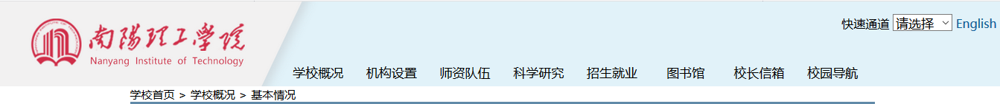

基本情况
南阳理工学院简介
南阳理工学院是全日制公办普通本科院校，位于楚风汉韵荟萃之所，商圣范蠡、科圣张衡、医圣张仲景故里、诸葛亮躬耕地——历史文化名城河南南阳。前身是河南省政府批准筹建的南阳大学，1993年1月国家教委批准建校定名为南阳理工学院，原张仲景国医大学并入，2004年5月教育部批准升格为本科院校，实行省市共建、以市为主的办学体制。先后获批国家教育现代化推进工程产教融合项目学校100所之一、教育部卓越工程师教育培养计划学校、全国文明单位、全国绿化模范单位、河南省示范性应用型本科类院校、河南省整体转型发展试点学校、中原经济区最佳服务高校、河南省十大创新创业典范学校、河南省双创基地，2017年荣获“河南省综合实力20强领军高校”，2018年入选全国创新创业典型经验高校50强。
x
现有全日制普通本专科学生2万余人，校园占地面积1760亩，建筑面积约59万平方米，教学科研仪器设备固定资产总值3.95亿元，建有22个中央财政支持地方高校发展专项资金建设实验室，36个省、市级重点实验室以及省实验教学示范中心。图书馆文献信息资源丰富，现有馆藏总量326.6万册（截止2018年底），其中纸质图书160万册，电子图书166.6万种（册），自建和购买有“馆藏数字书库”“南工文库”、“仲景文献数据库”、“建筑科学专题库”“中医学专题库”“外文数据库IEEE”“外文数据库EI”等近40个数据库。主干带宽2万兆、出口带宽9000M的校园网覆盖全校，在全省率先实现大二层扁平化网络架构，有线、无线、IPV4、IPV6统一身份认证，终端计算机21000余台。
学校坚持“做强传统工科，发展新兴工科，做优特色学科”，逐步形成结构优化、特色鲜明、契合地方经济发展需要的专业集群，契合区域产业需要，围绕服务南阳先进装备制造、光电信息、电商及物流、“楚风汉韵”古建筑遗存保护、仲景品牌医药等支柱、新兴产业，分别打造机械设计制造及其自动化、材料成型及控制工程；软件工程、光电信息科学与工程；电子商务、物联网工程；历史建筑保护工程、城乡规划；中医学、中药学等一批核心专业集群，逐步形成产业群、专业群、人才链与南阳经济社会发展的紧密对接。现有19个教学院部，覆盖理、工、管、文、经、教育、法、医、艺术等9大学科，开设52个本科专业，其中9个教育部、省教育厅“卓越计划”试点专业，16个省级重点学科、特色专业以及专业综合改革试点，10门国家级、省级精品课程、精品资源共享课、精品在线开放课程等。
学校坚持“高起点、分步走、双师型、可持续”的教师队伍建设指导思想，培养与引进相结合、专职与兼职相结合、理论教师与实践教师相结合、学校教室与企业工程师详解会，建设一支结构合理、素质优良的专业化教师队伍。现有教职工1658人，其中高级专业技术职务560人，博士、硕士学位1116人。拥有河南省优秀专家、省政府特殊津贴专家、优秀管理专家、省学术技术带头人11人，省教育厅学术技术带头人25人，建设有20个省、校级创新型科技团队和优秀教学团队，设有“河南省博士后研发基地”，聘请多位两院院士、知名专家学者为兼职教授。学校坚持“教学为重，教学与科研并举，以教学带动科研、以科研服务教学质量”的理念。鼓励教师将最新的科研成果应用到教学实践，促进教学内容更新，形成科研与教学的良性互动。近3年立项科研项目328项，其中国家级10项、省部级171项；公开发表论文2600余篇；出版专著、译著150本，主参编教材100余部。主办的《南阳理工学院学报》国内外公开发行，影响力不断提高。
d
学校坚持产教融合、校企协同育人，开展校地合作，主动适应地方需要，为地方经济社会发展提供人才和科技支撑。拥有教育部产教融合创新基地、教育部工程实践基地、省院士工作站、省博士后研发基地、省重点实验室、南阳协同创新研究院、中关村领创空间等一批科研平台。组建“智能制造”、“仲景健康养生”、“电商实训”、“教育国际交流”等科研服务中心。与美国通用电气、德国博世、长城计算机等共建实验室，与中兴通讯签约共建“南阳理工·中兴新思学院”ICT产教融合创新基地，开办有九州通班、宇通班、理光班、二机国贸班等校企联合班。近3年与企业联合申报应用性研究课题140余项，参与企业技术革新、技术改造、新产品研发170余项，获省、市成果奖励500余项。
学校高度重视大学生创新创业就业工作，以创新带动创业、以创业引领就业，力争毕业生“能就业，会就业，就业好，敢创业”。对毕业生进行分类指导和精准服务。大力开展就业基地建设工作，全面提升毕业生就业率和就业质量。我校近5年毕业生就业率始终保持在95%以上，多次获“河南省普通大中专毕业生就业工作先进集体”“河南省高校毕业生就业评估优秀单位”。
dd
设有“南阳理工学院校友联谊总会”，在国内外设有54个校友联谊分会。支持成功校友注册成立河南省高校首家毕业生创新创业促进会，设立校友创新创业基金200万元；建立大学生创新创业孵化园、南阳理工学院大学科技园、南阳创业学院和中关村南阳领创空间，实施河南高校首个“大学生创业引领计划”，2016年9月被认定为“国家级众创空间”，2017年2月被认定为河南省首批高校科研院所双创基地，先后被授予“河南省大学生创业教育示范学校”“河南省大学生创业示范基地”等，2018年入选全国创新创业典型经验高校50强。
近年来，我校学生在“挑战杯”全国大学生课外学术科技作品竞赛、ACM-ICPC国际大学生程序设计竞赛、全国大学生数学建模大赛、全国大学生电子设计大赛等重大赛事中累计获得1243项奖项。2015年学校成功承办首届中国大学生程序设计竞赛（CCPC）；学校学生代表多次参加ACM国际大学生程序设计大赛，累计获得亚洲区银奖1项，铜奖21项；参加第九、十、十一届河南省ACM大学生程序设计竞赛并获三连冠；参加百度首届高校搜索营销大赛获得一等奖，总排名第二；2017年，在第八届“蓝桥杯”国际软件大赛荣获2项一等奖；在2017年首届全球华人网络安全大赛暨第四届上海市大学生网络安全大赛均获特等奖。据统计，2018年，我校学生获得省部级以上奖项611项，其中国家级一等奖以上奖励53项，二、三等奖奖励共计338项。在中国高等教育学会发布的2014-2018年中国高校创新人才培养暨学科竞赛评估中，我校排名全国高校第256名，河南省第9名。
学校坚持走开放多元办学之路，积极开展对外交流与合作。搭借京豫高等教育合作平台，与北京信息科技大学结对共建；加入全国应用技术大学联盟，参与组建全国部分理工类地方本科院校联盟、汉江流域大学联盟。同时拓展国际交流合作，中外合作办学项目持续实施；在韩国设立分院，招收中医学韩国留学生；与新西兰惠灵顿维多利亚大学、英国北安普顿大学、韩国庆南大学合作办学，培养具有国际视野和专业背景的复合型人才；与美国东斯特拉兹堡大学等开展交换生项目，与近百所国外大学建立校际合作关系；积极拓展“一带一路”沿线国家的交流与合作，为师生赴国（境）外攻读硕士、博士学位提供机会，招收外国学生来校留学和培训；设有中原中韩文化交流中心、南阳中日文化交流中心等。
学校秉承“厚德、博学、求真、至善”的南工校训，弘扬“不甘示弱”的南工精神，确立“立本、立真、立特、立新”的办学理念，坚持“应用型、地方性、服务型、开放式”的办学定位，植根南阳、服务河南、面向全国，致力于建设特色鲜明的高水平应用型理工大学。
现任领导
校党委书记 刑勇
校长、党委副书记 刘荣英
校党委副书记秦鹏鸣
副校长张伟
副校长肖泽昌
副校长张铟
副校长张世海
纪委书记许建辉
工会主席周礼春
校园导航